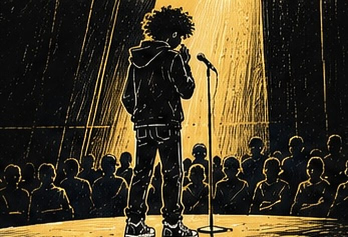
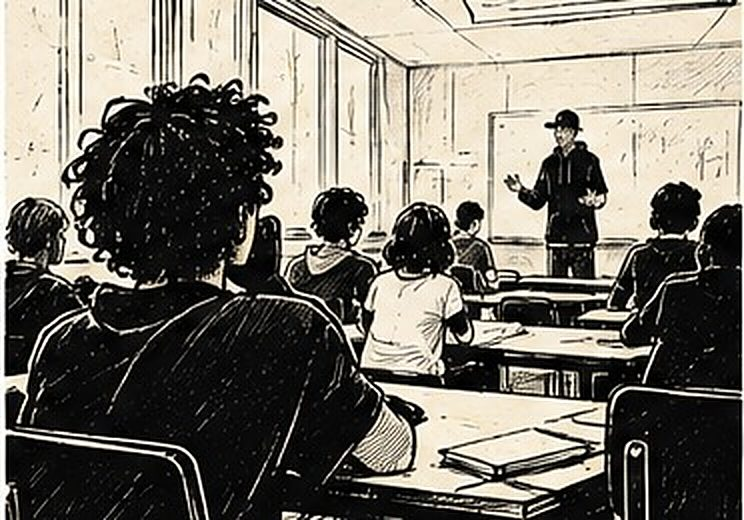

Un concours d’éloquence en ligne de mire, au lycée Bertran de Born
Au lycée Bertran de Born, à Périgueux, une classe s'est lancée dans six heures d'atelier éloquence d'un seul coup, de l'initiation jusqu'à la déclamation — un projet pensé pour un concours d'éloquence et pour le bac.
Auteur : Esope · Intervenants slam : Esope

Le lycée Bertran de Born, à Périgueux, a misé sur un format concentré pour son atelier d'éloquence : six heures d'un coup, avec une seule classe, de l'initiation jusqu'à la déclamation. Un projet pensé pour préparer un concours d'éloquence — et, plus largement, les épreuves orales du bac.
Le contexte : un projet calé sur deux échéances réelles
Une classe qui prépare à la fois un concours d'éloquence et le bac n'a pas besoin qu'on lui explique pourquoi bien parler compte : l'enjeu est déjà là, concret, daté. Mon rôle a consisté à construire, en six heures, un parcours complet — de la découverte du format à un premier passage abouti — plutôt qu'une simple initiation qui resterait sans suite.
Le déroulement de la journée
Six heures d'un coup, c'est un format qui ne laisse pas de place à l'attente : on entre dans le vif du sujet dès les premières minutes. La matinée a été consacrée à poser les bases — placement de voix, regard, gestion du trac — avant de passer à la construction d'un propos et à son écriture. L'après-midi a basculé vers la mise en voix et les premiers passages, jusqu'à un temps de déclamation individuelle en fin de journée.

Les techniques travaillées
Le travail a suivi la progression classique de l'éloquence — structurer une pensée, choisir ses mots, tenir sa voix, occuper le silence — mais sur un rythme resserré qui a demandé d'aller plus vite sur chaque étape que sur un format étalé. La déclamation finale a servi de fil rouge dès la première heure : chaque exercice visait ce moment-là.
Ce que les élèves ont travaillé
Cette journée a permis de travailler la prise de parole dans des conditions proches de celles d'un oral d'examen : peu de temps de préparation, un passage individuel, un jury attentif. Pour une classe qui vise à la fois un concours et le bac, cette proximité avec les conditions réelles compte au moins autant que le contenu technique.
Le moment marquant
La déclamation de fin de journée a fonctionné comme une vraie répétition générale : chacun est passé devant la classe entière, dans les conditions les plus proches possible de ce qui les attend au concours. Voir des élèves qui n'avaient jamais pris la parole en public le matin tenir une déclamation construite l'après-midi même a confirmé qu'un format concentré peut aller très loin en une seule journée.
Ce que ce projet a permis d’explorer
Cette journée a confirmé qu'un format concentré, loin d'être un pis-aller, peut construire une vraie progression quand chaque étape vise clairement le moment final. Si votre établissement prépare un concours d'éloquence ou une échéance orale précise, parlons du format qui conviendrait.